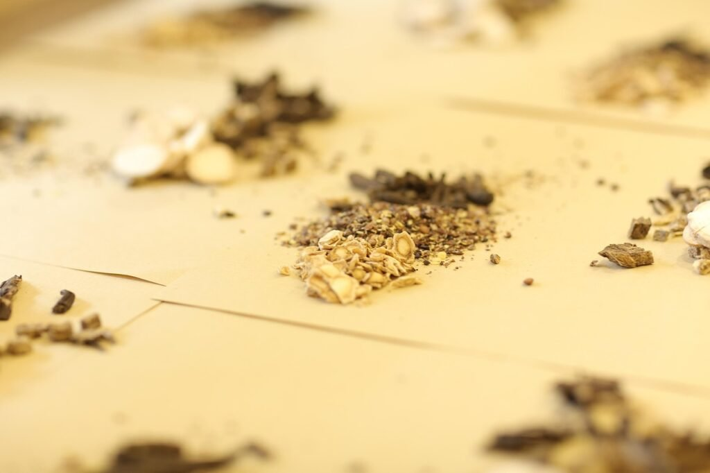
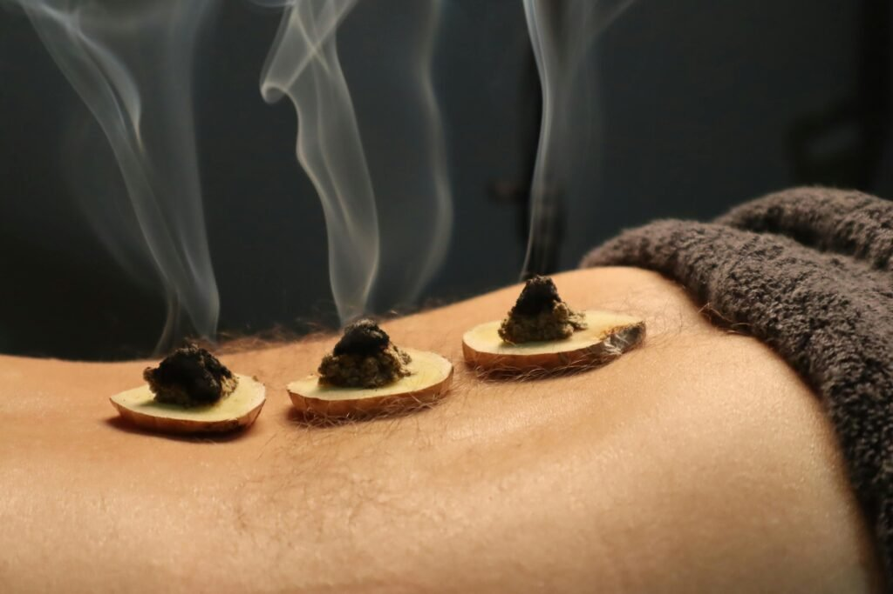
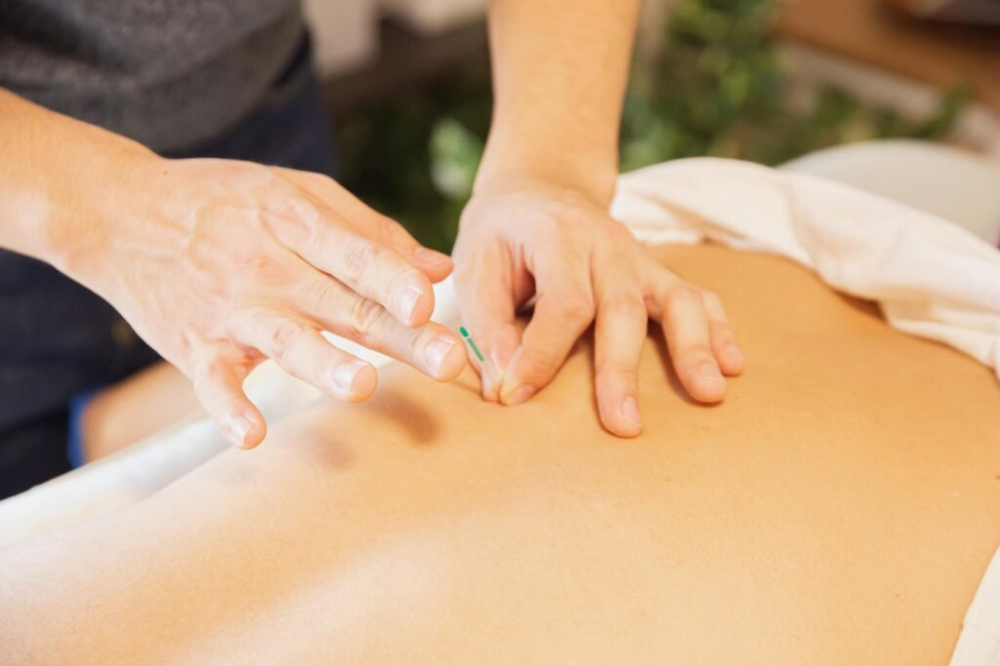
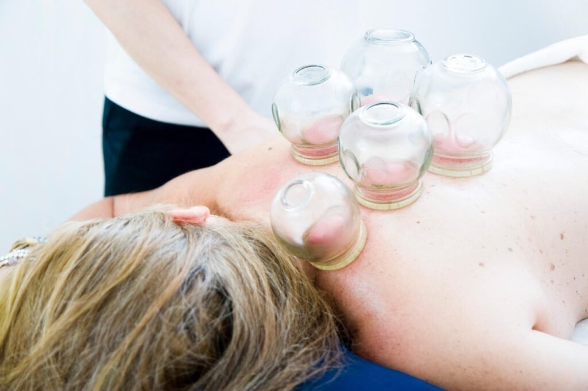

重获健康平衡，拥抱充实人生
法拉盛中医诊所｜针灸推拿诊疗服务
国医堂特色中药疗法
高浓度水提粉末：现代中医的创新实践
1. 中药的独特优势
- 整体调理，平衡阴阳：中医强调人体是一个整体，疾病的发生往往涉及多个脏腑的失衡。中药不仅针对症状，更注重扶正祛邪、增强自身修复能力，帮助身体恢复平衡。
- 个性化辨证施治：不同个体、不同体质、不同阶段的疾病表现各异，中药讲究因人施治，提供个性化的调理方案，而非一刀切的标准化治疗。
- 安全温和，减少副作用：相比某些急性病治疗药物，中药多采用天然植物药材，温和调理，长期使用可减少身体负担，特别适合慢性病管理和康复阶段。
- 现代工艺提升吸收率：国医堂的高度水提粉末，通过现代水提取浓缩技术，最大化保留有效成分，提高生物利用度，使患者无需长时间熬煮，直接冲泡即可服用。
2. 中药与西药的互补性
• 西药在急症、感染性疾病和手术医学等领域具有快速见效的优势，而中药在慢性病、免疫调节、功能恢复等方面展现出更持久和系统的疗效。 • 西药擅长精准干预，例如抗生素对抗细菌感染、降压药迅速控制血压等； • 中药则强调整体调整，如在糖尿病、高血压、免疫功能下降的情况下，帮助身体恢复自我调节能力，减少长期依赖药物。 • 两者结合可实现更全面的健康管理，如术后康复、慢性病治疗、亚健康调理等领域。
3. 适用人群
- 男女性健康：月经不调、宫寒不孕、男性功能调理等。
- 免疫力提升：新冠后遗症、体质虚弱、慢性疲劳综合症等；
- 消化系统调理：胃炎、便秘、肠道功能紊乱等；
- 慢性疾病管理：高血压、糖尿病、痛风、肝胆调理、关节炎、失眠焦虑等；
4. 科学服用，健康管理
国医堂坚持中医现代化、科学化发展，在不忽视现代医学的基础上，充分发挥中药的优势，帮助更多人实现健康管理。我们的高度水提粉末让中药疗法更加高效、便捷、安全，让传统中医智慧更适应现代人的生活方式。

国医堂特色中医疗法——艾灸
温养正气，激发自愈力
1. 艾灸的独特优势
- 温经散寒，调和阴阳：艾灸的温热作用可深入脏腑，特别适用于虚寒体质、气血不足、经络阻滞导致的各种不适，如女性宫寒、关节疼痛、消化不良等。
- 激发正气，提高免疫：艾灸不仅温补阳气，还可提升免疫功能，增强人体抗病能力，适用于体虚易感冒、亚健康人群及慢性疲劳综合症患者。
- 非侵入性，自然疗法：相比药物治疗，艾灸是一种外治法，通过穴位热刺激改善体质，无需服药，适合长期调理。
- 现代改良，更安全便捷：国医堂采用无烟艾灸，避免传统艾灸烟雾大的风险，使其更易被现代人接受。
2. 艾灸与现代医学的互补性
艾灸更适合慢性疾病、免疫功能调节和康复管理。 •艾灸注重整体调理：可促进气血循环，改善慢性病症状，增强机体恢复能力，如术后康复、慢性病管理、痛经等。
3. 适用人群
- 艾灸适用于多种慢性病和亚健康状态，国医堂特别推荐给以下人群：
- 妇科疾病：妇科各类疼痛、月经不调、伴手脚冰冷、畏寒怕冷、容易感冒；
- 慢性病患者：颈肩腰腿痛、消化不良、肠胃功能紊乱、失眠焦虑；
- 免疫力低下：新冠后遗症、疲劳综合症、慢性炎症反复发作；
- 亚健康人群：长期疲惫、精神不振、焦虑失眠、压力过大。
4. 科学施灸，安全有效
•根据体质选择合适的灸法，如温和灸、隔姜灸、扶阳灸、龙骨灸等，避免烫伤和过度施灸。 •艾灸可长期调理，但需在专业医生指导下进行个性化方案。
5. 现代艾灸，让中医更贴近生活
国医堂的艾灸疗法结合传统艾灸技法和现代设备，使艾灸更加高效、安全、便捷，让更多人受益于这一古老而科学的中医疗法，助力健康养生，温养正气，提升生命质量。

国医堂特色中医疗法——针灸
调和气血，激发自愈力
1. 针灸的独特优势
- 疏通经络，缓解疼痛：针灸可以活血化瘀、通畅气血，有效缓解颈椎病、腰椎间盘突出、关节炎、头痛等疼痛类疾病。
- 调整脏腑，平衡阴阳：通过刺激不同穴位，针灸可调节五脏六腑功能，如调节胃肠道、改善月经不调、提升睡眠质量。
- 提高免疫力，促进康复：针灸可激发人体免疫功能，适用于新冠后遗症、免疫低下、疲劳综合症等病症。
2. 针灸与现代医学的互补性
• 现代医学擅长手术和药物干预，而针灸则在功能性疾病、慢性病管理、康复治疗等方面展现出独特优势。 • 针灸更擅长调节功能，如调节女性内分泌、缓解焦虑失眠、调理消化系统、改善神经衰弱。 • 针灸在女性疾病、慢性疼痛、神经系统疾病（如中风后遗症）等领域，针灸可起到良好治疗作用。
3. 适用人群
- 针灸适用于多种慢性病和功能性疾病，国医堂特别推荐给以下人群：
- 疼痛管理：颈椎病、腰椎间盘突出、关节炎、偏头痛、肩周炎；
- 妇科调理：痛经、月经不调、更年期综合症、不孕不育；
- 神经系统调理：失眠、焦虑抑郁、神经衰弱、面瘫、中风后遗症；
- 消化系统改善：胃痛、胃炎、消化不良、便秘、腹泻；
- 免疫系统调节：新冠后遗症、慢性疲劳综合症、免疫低下。
4. 施针过程与安全性
• 针灸采用一次性无菌针具，确保治疗安全无感染风险。 • 依据个体体质进行个体化穴位选择。 • 结合电针、温针灸、毫针、头皮针等不同针灸技法，精准施治，提高疗效。 • 施针因人而异调整治疗频率。
5. 现代针灸，让传统医学焕发新生
国医堂的针灸疗法，结合传统中医智慧与现代医学理念，使针灸更加精准、高效、安全，不仅针对疾病治疗，也适用于健康管理、亚健康调理、疾病预防。 针灸，作为中医的国粹，不仅仅是缓解症状，更是调和阴阳、激发自愈能力、提升整体健康状态的科学疗法，适应现代人多样化的健康需求。

国医堂特色中医疗法——拔罐
通经活血，祛湿排毒
拔罐是中医经典外治疗法之一，利用负压作用刺激经络穴位，疏通气血、祛湿排毒、调和脏腑，特别适用于妇科疾病和当季高发的常见病调理。国医堂结合现代医学理念，使拔罐疗法更加精准、安全，成为女性健康管理和慢性病调理的重要选择。
1. 拔罐在中医妇科的应用
- 中医认为，女性的健康与气血运行、寒湿体质密切相关。拔罐通过区域散寒、活血化瘀、调理内分泌，在以下妇科疾病中具有良好疗效：
- 痛经、宫寒：拔罐可通络活血，改善子宫血液循环，缓解经期腹痛。
- 月经不调：针对月经提前、推迟、经量异常，通过拔罐刺激相应穴位，帮助调整气血平衡。
- 更年期综合征：拔罐可舒肝理气、镇静安神，改善潮热、盗汗、焦虑失眠。
- 慢性盆腔炎：通过清热利湿、化瘀散结，拔罐能有效缓解慢性炎症引起的腹痛、白带异常。
- 产后调理：拔罐可帮助祛风散寒、恢复气血，促进产后子宫恢复，缓解腰酸背痛。
2. 拔罐在常见病中的应用
- 拔罐可促进免疫力、调理脏腑功能，在季节性常见病中具有独特优势：
- 新冠后遗症：针对长期咳嗽、气短、乏力、胸闷，拔罐可清肺化痰、增强免疫。
- 慢性支气管炎、过敏性鼻炎：拔罐可祛风解表、温阳固表，适用于反复感冒、鼻塞咳嗽人群。
- 消化不良、胃痛、便秘：通过刺激消化系统相关穴位，拔罐可调理胃肠蠕动，缓解消化不良、腹胀。
- 颈肩腰腿痛：拔罐可活血化瘀、舒筋通络，缓解肩颈僵硬、腰椎间盘突出、关节炎。
- 失眠、焦虑、神经衰弱：针对长期精神压力、睡眠障碍，拔罐可镇静安神。
3. 施罐方式与注意事项
- 国医堂提供多种拔罐技术，针对不同病症选择合适疗法：
- 留罐：适用于寒湿体质、宫寒、关节炎，能快速祛寒散瘀。
- 走罐：用于背部肌肉酸痛、肩颈僵硬、慢性支气管炎，可促进气血循环。
- 闪罐：适合体质虚弱人群，可精准控制吸附力度，安全无痛。 拔罐时间一般控制在5-10分钟，避免时间过长导致皮肤损伤。孕妇、极度虚弱者、高度贫血者不宜使用拔罐疗法。
4. 现代拔罐疗法，让中医更高效便捷
国医堂结合传统中医智慧与现代康复理念，通过精准选穴、个性化治疗方案，让拔罐疗法更安全、更科学。 拔罐不仅仅是一种治疗手段，更是一种调和气血、调理体质、激发人体自愈力的健康管理方式。无论是女性健康、慢性病调理，还是免疫提升、体质改善，拔罐都是现代人健康管理的重要选择。

国医堂特色中医疗法——刮痧
通经活血，祛湿排毒
1. 刮痧在中医妇科的应用
- 中医认为，女性健康与气血运行、脏腑功能、寒湿体质密切相关。刮痧能够调和气血、温经散寒、活血化瘀，在以下妇科疾病中有显著疗效：
- 月经不调（痛经、闭经、月经量少）—— 调节气血，温经止痛。
- 宫寒不孕（子宫寒冷、排卵障碍）—— 温补肾阳，提高受孕率。
- 更年期综合症（潮热盗汗、心悸失眠、情绪不稳）—— 调节内分泌，舒肝理气。
- 产后恢复（体虚乏力、恶露不净）—— 促进新陈代谢，帮助身体恢复。
- 慢性盆腔炎（白带异常、下腹坠痛）——清热利湿，消炎化瘀。
2. 刮痧在常见病中的应用
- 颈肩腰背痛（颈椎病、肩周炎、腰椎间盘突出）—— 舒筋通络，活血止痛。
- 刮痧可刺激穴位，调整脏腑功能，增强免疫力，对当季常见病具有很好的调理作用：
- 新冠后遗症（持续咳嗽、胸闷乏力）—— 清肺化痰，缓解呼吸不畅。
- 慢性支气管炎、过敏性鼻炎（易感冒、咳嗽气喘）—— 排寒宣肺，提高免疫。
- 消化不良、胃痛、便秘（食欲差、腹胀）—— 健脾和胃，促进肠道蠕动。
- 失眠、焦虑、神经衰弱（睡眠浅、易醒、多梦）—— 镇静安神，缓解紧张情绪。
3. 刮痧的方式与安全性
国医堂提供不同的刮痧方法，针对不同病症制定个性化方案。 刮痧后皮肤可能出现出痧（瘀斑），通常3-5天会自然消退。建议避免风寒直吹，保持温暖，适量补水。孕妇、极度虚弱者、高度贫血者不宜刮痧。
4. 现代刮痧疗法，让传统疗法更科学化
国医堂的刮痧疗法，结合传统中医经络学与现代康复理念，通过精准选穴、个性化施刮方案，让刮痧更加安全、舒适、科学，不仅用于疾病治疗，更适用于女性健康管理、免疫提升、体质改善。 刮痧不仅仅是缓解症状，更是一种调节气血、改善体质、激发人体自愈力的中医智慧，让现代人更好地享受这一古老医学的健康价值。

国医堂特色中医疗法——推拿
调和气血，助力男女健康与常见病调理
1. 推拿在中医男科的应用
- 男性健康与肾气、气血循环、情志调节密切相关，推拿可通过刺激相关经络，温补肾阳、活血通络、改善生殖功能，在以下男科疾病中发挥显著作用：
- 男性不育（少精、弱精、精液质量差） —— 补肾健脾，增强生殖系统机能，提高精子活力。
- 慢性疲劳综合症 —— 提高免疫力，缓解压力，恢复精力充沛状态。
- 腰膝酸软、性功能减退 —— 增强腰部和生殖系统功能。
2. 推拿在中医妇科的应用
- 女性的健康与气血运行、脏腑调节密切相关，推拿可改善气血循环、痛经活络、调节内分泌，适用于以下妇科疾病：
- 产后身痛 —— 头痛、肩痛、腰痛、膝关节痛等。
- 妊娠水肿 —— 痛经活络，利水消肿。
- 更年期综合征 —— 镇静安神，解郁开窍，缓解心烦失眠，情绪波动。
- 产后恢复 —— 帮助产妇恢复盆底肌，促进盆腔内环境修复。
- 慢性盆腔炎 —— 采用深层推拿手法，痛经活络、祛瘀止痛，缓解炎疼痛。
3. 推拿在常见病中的应用
- 推拿可调节神经系统、改善循环、增强免疫，对季节性常见病具有显著疗效：
- 颈肩腰腿痛（颈椎病、腰椎间盘突出、肩周炎） —— 舒筋活血，缓解僵硬疼痛。
- 新冠后遗症（长期咳嗽、乏力、胸闷） —— 促进肺部气血流通，增强免疫。
- 失眠、焦虑、神经衰弱 —— 平衡神经系统，助眠安神。
- 免疫低下、慢性疲劳综合症 —— 提升正气，增强抗病能力。
4. 特色推拿手法与安全性
- 国医堂推拿结合传统中医经络理论与现代康复技术，提供以下特色手法：
- 经络推拿 —— 以疏通经络、调理气血为主，适用于男科、妇科调理、脾胃调理、疲劳恢复。
- 深层拨筋 —— 针对颈肩腰腿痛、慢性关节炎，缓解肌肉僵硬，促进血液循环。
- 穴位点按 —— 结合指压刺激特定穴位，适用于失眠、头痛、内分泌调节等慢性病调理。 安全性保证：国医堂的推拿疗法根据患者体质、病情量身定制力度和频率，确保舒适、安全。
5. 现代推拿疗法——让传统医学更贴近生活
国医堂的推拿疗法结合中医传统技法和现代康复理念，使推拿更加科学、高效、安全，不仅适用于疾病治疗，更适合男女健康管理、免疫提升、体质改善。推拿不仅仅是缓解症状，更是一种调节气血、改善脏腑功能、促进自愈能力的科学疗法，让现代人轻松享受中医带来的健康体验。

就诊方向
主治项目与诊疗服务
国医堂整合针灸、中药、推拿、艾灸、拔罐与刮痧等手段，并设中药房支持复方应用。由纽约州执照中医师辨证后拟定个体化诊疗路径，下列为来院常见就诊方向；适应证、疗程及预期须以面诊评估为准，疗效存在个体差异。
痛症痛症与筋骨
颈肩腰背
颈椎病针灸、肩颈僵硬、腰痛针灸、腰肌劳损与坐骨神经痛等；针推、艾灸配合，旨在缓解肌筋膜紧张、减轻疼痛并改善关节活动度。
头面神经
偏头痛、紧张性头痛、头晕；面瘫恢复期的针刺辨证与疗程规划。
关节与劳损
膝肩腕不适、腰椎问题、腕管综合征等，评估后选用针刺、推拿或综合中医调理。
妇儿男科中医妇科 · 生育 · 中医男科
中医妇科调理
月经先后不定期、痛经、经量异常、更年期综合征及产后体虚等，中药与针灸分期调养，侧重周期重建与全身状态的同步改善。
备孕与不孕
孕前体质调理及周期、排卵相关困扰；针药结合须规律随访，据疗效反应调整治则。
中医男科与泌尿
中医男科、中医泌尿科常见不适如前列腺相关症状、尿频尿急及精力睡眠问题等，辨证论治，并建议必要时西医复查。
内科睡眠 · 体质 · 皮肤
失眠与情绪
失眠针灸配合中药辨证：入睡困难、易醒、焦虑烦躁、心悸等；辅以作息与情志调摄建议，兼顾短期安神与中长期体质调整。
脾胃与亚健康
疲劳乏力、消化不良；病后体虚、小儿咳嗽等内科辨证调养；含中医减肥相关体重管理咨询（需营养与代谢综合评估，因人而异）。
皮肤与湿浊
湿疹、荨麻疹等；带状疱疹后遗神经痛恢复期的中药与针灸辅助。